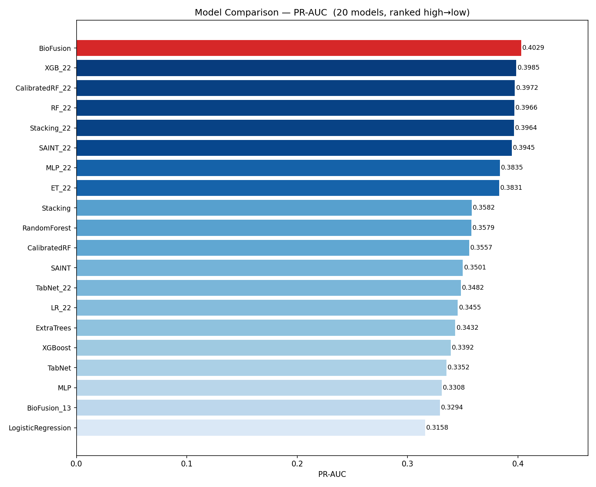
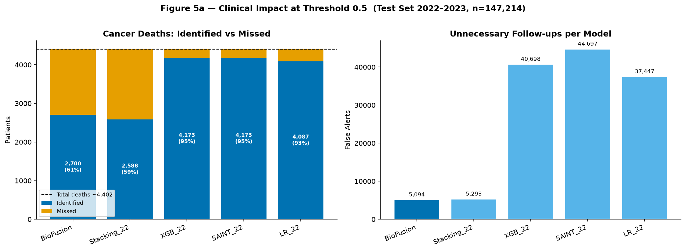

Primary metric
PR-AUC is emphasized because the positive class is rare and precision-recall tradeoffs matter more than raw accuracy.
M5 · Modelling and Evaluation
M5 evaluates multiple models on the same diagnosis-time feature policy and temporal split, then uses BioFusion as the final demonstration model.

| Model | PR-AUC | AUROC | F1 | Brier |
|---|---|---|---|---|
| BioFusion | 0.4029 | 0.9360 | 0.4429 | 0.0340 |
| XGB_22 | 0.3985 | 0.9341 | 0.1693 | 0.1939 |
| CalibratedRF_22 | 0.3972 | 0.9304 | 0.4224 | 0.0323 |
| RF_22 | 0.3966 | 0.9304 | 0.2014 | 0.1533 |

Modelling workflow
Logistic Regression provides interpretability. Random Forest and XGBoost test non-linear tabular performance. Additional models include ExtraTrees, HistGBM, MLP, TabNet, FT-Transformer, SAINT, and stacking.
The final feature set adds T/N/M recodes, lymph node counts, node ratio, metastatic sites, pathological grade, histology group, marital status, metro context, income order, age, and COVID-period indicator.
BioFusion combines Random Forest, CatBoost, and XGBoost base learners through out-of-fold stacking, then applies an XGBoost meta-learner and isotonic calibration.
The primary holdout is temporal: training on 2018-2021 and testing on 2022-2023. The model reports PR-AUC, AUROC, F1, precision, recall, and Brier Score, while acknowledging follow-up truncation and external validity limitations.
PR-AUC is emphasized because the positive class is rare and precision-recall tradeoffs matter more than raw accuracy.
Isotonic calibration improves probability reliability, which matters for risk-tier communication.
Feature importance is checked against clinical knowledge: stage, grade, T/N/M, node burden, tumor size, and subtype should dominate.
Failure modes
| Limitation | Why it matters | How the demo handles it |
|---|---|---|
| Follow-up truncation | Recent diagnoses have less time for deaths to be observed. | M6 labels the score as a risk-style demo output, not a clinical endpoint guarantee. |
| Class imbalance | False alerts and missed cases must be interpreted together. | The stakeholder chart explains captured deaths and false alerts, not just AUROC. |
| External validity | SEER-based performance may not transfer unchanged to other healthcare systems. | The demo avoids making deployment claims beyond the project setting. |
| Interpretability tradeoff | Stacking improves performance but is less transparent than a single logistic model. | The API returns top drivers to keep the output explainable for presentation. |